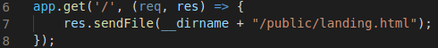

Installing Express
NodeJS features networking front and center. This is done by automatic inclusion of the http module (meaning you don't have to declare it as a dependency in your package.json). However in this course we have instead been using the popular Express library to achieve networking. Functionally Express allows you to serve web pages or create endpoints with minimum setup.
To use Express, we first have to list it in our package.json like in the picture
After including it, you will of course need to download the module through the use of npm install.
Writing code with Express is now possible by including it in our app.js with the require keyword, and assigning a variable with which we can reference it by.

App.get()
This method is the one you'll use to create HTTP Get Method endpoints and web pages with. A .post, .put and .delete exist for their respective counterparts.
The .get() method takes two parameters, the first one being a string of the web path to what you're serving, such as "/" for your servers landing page. The second parameter is a callback function, which will be responsible for what happens when somebody accesses the path specified.
A typical .get() callback will use the keywords req and res for its parameters, these of course being for request and response.

Req & Res
The request parameter can be used to access any data sent to the endpoint.
The response parameter is used to send data back to the client at the endpoint, and is the more commonly used parameter when dealing with .get().
Res can be used to either send data back to the endpoint, displayed as json, by using the res.send([data]) function.
Using res.sendFile([filePath]) instead, we can serve webpages at the URL. The filepath is usually the absolute path, and we can utilize the __dirname environment variable for our convenience here.
Your .html files are not able to link to other .css or .js files by default, which can be a bit unexpected. Instead, inside our app.js we have to use the express.static() method to define what folder we will allow our app to read static files from. This is done as follows:
The reason for this is simply security, as unregulated access to every file on our server puts ourselves at risk. It is convention to store your static files, along with your .html files, in a folder called "public".